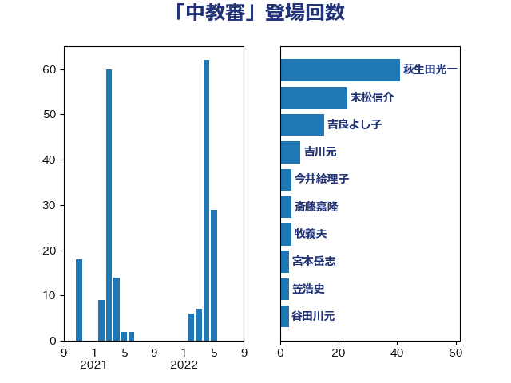

単語「中教審」

| 萩生田光一 | 自由民主党 | 41 回 |
| 末松信介 | 自由民主党 | 23 回 |
| 吉良よし子 | 日本共産党 | 15 回 |
| 吉川元 | 立憲民主党 | 7 回 |
| 今井絵理子 | 自由民主党 | 4 回 |
| 斎藤嘉隆 | 立憲民主党 | 4 回 |
| 牧義夫 | 立憲民主党 | 4 回 |
| 宮本岳志 | 日本共産党 | 3 回 |
| 笠浩史 | 無所属 | 3 回 |
| 谷田川元 | 立憲民主党 | 3 回 |
| 上野通子 | 自由民主党 | 2 回 |
| 丹羽秀樹 | 自由民主党 | 2 回 |
| 伊藤孝恵 | 国民民主党 | 2 回 |
| 掘井健智 | 日本維新の会 | 2 回 |
| 池田佳隆 | 自由民主党 | 2 回 |
| 片山大介 | 日本維新の会 | 2 回 |
| 藤田文武 | 日本維新の会 | 2 回 |
| 佐々木さやか | 公明党 | 1 回 |
| 勝目康 | 自由民主党 | 1 回 |
| 勝部賢志 | 立憲民主党 | 1 回 |
| 寺田学 | 立憲民主党 | 1 回 |
| 山下芳生 | 日本共産党 | 1 回 |
| 山崎正恭 | 公明党 | 1 回 |
| 岬麻紀 | 日本維新の会 | 1 回 |
| 松本剛明 | 自由民主党 | 1 回 |
| 柴山昌彦 | 自由民主党 | 1 回 |
| 梅村みずほ | 日本維新の会 | 1 回 |
| 横山信一 | 公明党 | 1 回 |
| 水岡俊一 | 立憲民主党 | 1 回 |
| 石原正敬 | 自由民主党 | 1 回 |
| 神田憲次 | 自由民主党 | 1 回 |
| 舩後靖彦 | れいわ新選組 | 1 回 |
| 荒井優 | 立憲民主党 | 1 回 |
| 高階恵美子 | 自由民主党 | 1 回 |